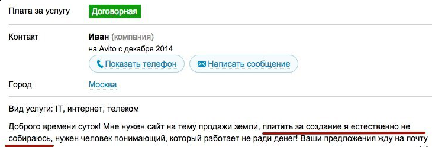
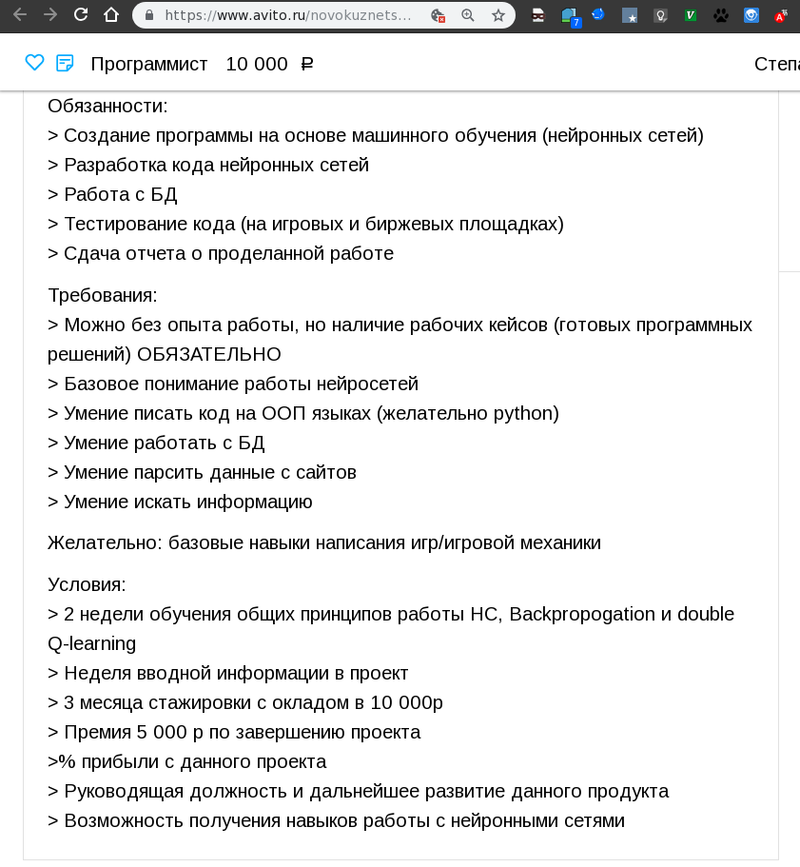
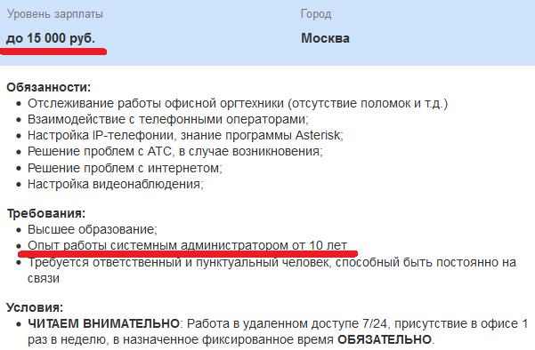

Про программистов доступным языком
 Помнится, устроился я в 2004-м году на свою первую работу. Устроился в научно-исследовательскую часть Пермского Государственного Университета "программистом" на полставки, если можно так выразиться, потому как в трудовой у меня было написано мифическое "Техник третьего разряда". С полным отсутствием опыта работы и обучаясь на втором курсе в ПГУ я рассчитывать на бОльшее не мог, точнее мог, но мне это было неинтересно. Мой оклад поначалу составлял целых 600 рублей в месяц. Я мог заплатить за сотовый телефон и раза три на эти деньги посетить столовую. Почему я пошёл туда работать? На то было несколько причин. Во-первых, это было рядом: достаточно было перейти из одного корпуса в другой - и вот я на работе. Во-вторых, у меня чесались руки в отношении программирования и администрирования, мне нужен был опыт, а на работе появлялись задачи и не нужно было изобретать их самостоятельно. В-третьих, шёл стаж.
Помнится, устроился я в 2004-м году на свою первую работу. Устроился в научно-исследовательскую часть Пермского Государственного Университета "программистом" на полставки, если можно так выразиться, потому как в трудовой у меня было написано мифическое "Техник третьего разряда". С полным отсутствием опыта работы и обучаясь на втором курсе в ПГУ я рассчитывать на бОльшее не мог, точнее мог, но мне это было неинтересно. Мой оклад поначалу составлял целых 600 рублей в месяц. Я мог заплатить за сотовый телефон и раза три на эти деньги посетить столовую. Почему я пошёл туда работать? На то было несколько причин. Во-первых, это было рядом: достаточно было перейти из одного корпуса в другой - и вот я на работе. Во-вторых, у меня чесались руки в отношении программирования и администрирования, мне нужен был опыт, а на работе появлялись задачи и не нужно было изобретать их самостоятельно. В-третьих, шёл стаж.
Моя начальница якобы имела большие планы на мою деятельность, но старательно уворачивалась от любых моих вопросов и уточнений. Под предлогом "уйди мальчик, не мешай, серьёзная тётя работает".
- Какое техническое задание? Зачем вообще? Иди, пиши программки!
В итоге я занимался системным администрированием и поддержкой нескольких десятков машин. Не могу сказать, что я был перегружен работой, но и от бездействия я точно не страдал - вирусы, порноблокировщики, проблемы со старым железом, переустановки винды, инвентаризации, регулярная помощь людям, пытающимся заставить работать флешки, подключенные в ethernet разъём и тому подобные мелочи занимали немало времени. Просто представьте несколько десятков людей, большинству из которых за 50 и которые пользуются компьютером по 8 часов в сутки. Всё, что могло происходить в результате их деятельности, происходило, и я помогал им по мере сил за те же 600 рублей в месяц. По всей видимости, в представлении моей начальницы этот процесс происходил как бы сам собой, без моего участия.
Затем меня попросили заняться написанием системы документооборота в общем отделе. Сотрудницы все сплошь были адекватными, на вопросы отвечали, на меня смотрели как на равного и как на человека, который старается всеми силами облегчить им жизнь. В результате через несколько месяцев вместо нескольких талмудов по 300 с лишним страниц каждый, которые перелистывали вручную в поисках нужного документа для оформления командировочного удостоверения, появилось приложение, работающее по сети, подставляющее в нужные поля нужные данные с автозаполнением, переводящее ФИО в нужные падежи, распечатывающее все необходимые документы, создающее отчёты и т.д.. База крутилась на сервере с четвёртой версией Red Hat, с неё регулярно снимались и архивировались бекапы. Одним словом, сотрудницы были счастливы, экономили кучу времени, а я был горд результатом своей работы, это был мой первый серьёзный опыт.
По завершении работы над этим проектом я снова периодически начал пытать свою начальницу в отношении деталей следующего проекта. Меня либо отправляли лесом, либо выдавали какие-то крохи информации, подразумевая, что мне этого должно быть вполне достаточно, чтобы я "написал всё как надо". Если упростить, наши диалоги сводились примерно к следующему и повторялись раз в 3-6 месяцев:
- Напиши мне программу?
- Какую?
- Хорошую, удобную!
- А что она должна делать?
- Откуда я знаю? Ты же программист - сам должен знать, как делают программы!
- Как - я себе представляю, но я не бухгалтер, мне нужен кто-то, кто мне объяснит детально и подробно, какие процессы мы должны автоматизировать, какие документы нам нужно получить на выходе и какой функционал вообще требуется.
- У меня нет на это времени!
- Дайте мне того, у кого на это время есть. Давайте напишем техзадание, чтобы я хоть что-то начал делать!
- Отлично! Вот и напиши! Бухгалтерии не до тебя, они делом заняты. В общем, не морочь мне голову, пойди, займись чем-нибудь.
Я всегда находил, чем заняться. Так и дожил до пятого курса. За это время мой оклад вырос до невиданных 2700 рублей в месяц. На эти деньги можно было позволить себе купить даже целый жёсткий диск. Не очень большой, конечно. И вот, скоро выпускной, а это значит, что мне теперь нужно платить как белому человеку, а не как рабу, иначе я себе найду место получше. Я заранее распечатал заявление по собственному желанию с открытой датой и держал его у себя в столе. Момент настал, меня вызывает на ковёр начальница с претензией: мол, прошло почти четыре года, а бухгалтерия всё ещё считает на калькуляторах и чем я тут вообще занимаюсь, мне ведь, между прочим, деньги за это платят!
На этом месте мне стало смешно, потому что слово "деньги" было так интонационно выделено, будто я на свои 2700 рублей мог каждый месяц приобретать по Майбаху, а на сдачу ещё пару Ламборгини. Тут же на меня наехали: серьёзные вещи обсуждаем, а я тут, понимаете ли, улыбаюсь. Объяснил кратко, куда уходит время и что телепатом я не являюсь и то, что нужно автоматизировать, требует не только моих затрат времени. Нет техзадания - нет результата. Меня поставили в известность о том, что меня увольняют, на что я достал заявление и положил на стол. Не понимаю, зачем было ломать всю эту комедию, могли бы разойтись полюбовно и спокойно.
Фриланс

Потом несколько раз,занимаясь фрилансом, я сталкивался с типовыми ситуациями, которые мне проще объяснить, прибегнув к сравнению с отношениями между строителем (С) и заказчиком (3).
Вариант первый - нищебродский
3: - Построй мне дом!
С: - Хорошо, какой он должен быть? Кирпичный, деревянный, панельный? Сколько этажей? С какой стороны подводим водопровод и электроснабжение? Нужен ли подвал? Гараж? Кто поставляет материалы?
3: - А что всё так сложно? Просто начни строить! Вот, у меня есть X денег!
С: - За X денег могу предложить только собачью конуру.
3: - Да ты охренел! Мне брат жены тестя сделает всё бесплатно и за два дня! Что тут сложного? 15 этажей один на другой поставил, сверху крыша - всё!
C: - В таком случае пожалуйста, обращайтесь к брату жены тестя!
З: - Да пошёл ты на х.., дебил! Развелось тут… # далее следует подробное описание всех строителей в целом и нашего в частности, их ориентации, профессионализма, половых отношений с конями, коэффициента “зажратости” и всё это с виртуозным использованием ненормативной лексики (не удивляйтесь, такие заказчики тоже встречаются).
Вариант второй - конспиративный.
3: - Построй мне дом!
С: - Хорошо, какой он должен быть? Кирпичный, деревянный, панельный? Сколько этажей? # и т.п..
3: - Не могу сказать. Хороший, качественный, удобный!
С: - Ну смотрите, у первого варианта есть такие-то и такие-то недостатки и растакие достоинства, у второго ... # далее следует подробное описание разных вариантов, список наводящих вопросов, ссылки на примеры и т.п..
3: - Ну красивый, короче! Чтобы я зашёл и мне всё сразу понравилось!
С: - Извините, похоже, мы с вами не сработаемся, обратитесь пожалуйста к кому-нибудь другому.
З: - А я думал, вы профессионал!
Вариант третий - уточняюще-дополняющий.
3: - Построй мне дом!
С: - Хорошо, какой он должен быть? Кирпичный, деревянный, панельный? Сколько этажей? # и т.п..
З: - Мне нужен панельный 15-ти этажный дом с подземной стоянкой ...
# далее следует более-менее грамотное описание, говорящее о том, что человек примерно знает, чего он хочет, последующее согласование деталей, бюджета, составление технического задания и начало работы.
# спустя несколько дней работы
C: - Смотрите, я сделал подземную стоянку, вентиляцию, подвёл коммуникации и построил первый этаж, удостоверьтесь, что всё соответствует вашим представлениям.
3: - Да, всё отлично, но я бы ещё добавил подземную стоянку второго уровня.
С: - Это ещё на этаж вниз?
3: - Ну да. Это реализуемо?
С: - В принципе, реализуемо, но мы не планировали этого, придётся дополнительно укреплять фундамент, переделывать отвод грунтовых вод, займёт дополнительно месяц, либо можно начать сначала, первый вариант будет стоить столько, второй - столько.
3: - Нас устроит, оформим дополнительным договором к основному.
# через месяц
C: - Мы подняли 7 этажей, проверьте, будьте добры.
3: - Чудесно, волшебно, но пожалуй нам нужна вертолётная площадка.
С: - ГДЕ?
3: - На седьмом этаже.
С: - Но выше будет расположен восьмой этаж.
3: - Ну так давайте что-нибудь придумаем, выносную консоль с площадкой, на которую будет садиться вертолёт.
С: - Тут нужна будет сложная инженерная работа, многое придётся переделать...
# Далее снова множество согласований, оформлений бумаг, согласие на дополнительную оплату и т.п.. Каждый следующий цикл переделок оттягивает сдачу проекта, добавляет сложности, новых костылей, подпорок, рисков обрушения и тому подобного. В итоге чудом найдены компромиссы, закончены все 15 этажей, строитель горд собой, он решил множество сложных задач, сумел совместить несовместимое, хоть и потратил на это уйму времени и сил. Он готов сдать проект заказчику и получить обещанное со всеми полагающимися доплатами.
С: - Я закончил проект, можете принимать!
З: - О! Просто шикарно! Мне всё так нравится! И эти подпорки так грациозны! Только я думаю, второй этаж надо снести нахер!
С: - ?????
3: - Ну, второй этаж площадью 300 квадратов, а мне нужно 800. Первый и с третьего по 15-й можешь оставить как есть, меня полностью устраивает!
Причины
Вообще, все проблемы возникают из-за непонимания уровня сложности. Большинство программ и приложений намеренно сделаны таким образом, чтобы скрывать сложность от пользователя, и эта кажущаяся простота создаёт впечатление о том, что всё в мире просто. Электричество просто есть в розетке. Автомобиль просто едет при нажатии педальки. Какие атомные и гидроэлектростанции с сотнями квалифицированных сотрудников? Какие 30 тысяч деталей, спроектированных, протестированных и подогнанных друг к другу десятками инженеров на протяжении нескольких лет работы? Это слишком сложно для понимания и представления простого человека. Сделайте ему автомобильку из четырёх колёс, кузова, педалек и руля - этого ведь вполне достаточно для того, чтобы оно двигалось и этим можно было управлять! Пусть внутри будет некая магия, магия - это ведь так просто, достаточно знать пару нужных заклинаний!
Одно время я занимался парсерами, и меня попросили написать "парсер любого магазина". Как бы это получше объяснить? Заказчик должен добавить адрес ЛЮБОГО online магазина, торгующего чем угодно - книгами, бытовой техникой, медикаментами или секс-игрушками. Парсер в свою очередь должен понять, какова структура данных, где какие категории и поля, в каком формате они хранятся, получить рекурсивно все данные, привести их к нужному виду, добавить в общую базу и автоматически сделать наценку в 15% для последующего использования в online магазине заказчика. Как вы думаете, какова должна быть сложность подобной программы? Это вообще реализуемо? И если да, то сколько людей и лет времени на это нужно? Чтобы было понятнее, это примерно из того же разряда, что и “написать свой google” - там же просто поле ввода и кнопочка, куда проще? Или создать лекарство от любой болезни. Знаете, сколько был готов предложить за написание чудо-парсера заказчик? Попробуете угадать? Целых полторы тысячи рублей. Полторы. Тысячи. Рублей.
Тридцать дней недели
Кстати, о парсерах для любых данных. Давайте для упрощения мы возьмём хотя бы дни недели. Как вы думаете, сколько дней в неделе? Любой нормальный человек скажет - семь! Но не человек, который писал парсеры. Давайте посчитаем, даже не учитывая регистр написания:
Понедельник, Вторник, Среда, Четверг, Пятница, Суббота, Воскресение
П, В, С, Ч, П, С, В
Пн., Вт., Ср., Чт., Пт., Сб., Вс
Пн-к, Вт-к, Ср-а, Чт-г, Пт-а, Сб-а, Вс-е
Сколько получается? Двадцать восемь? А вот и нет! Есть ещё парочка на закуску, я не шучу, в таком виде эти дни недели были употреблены два раза.
Понедельнек Вторнек
В примере, приведённом выше, мы учли существующие ошибки (хотя и далеко не все потенциально возможные - а как же читверг?), но совершенно не учитывали например, банальные опечатки. Что должно происходить в момент нахождения нового восемьдесят-какого-то формата? Программа должна падать, кричать от боли и звать на помощь человека, который разберётся в проблеме и добавит логику обработки очередного “панидельнека”. И это обработка только одного поля для одного парсера. Полей же может быть несколько десятков. А парсеров - несколько сотен. То есть, помимо набора программ, для поддержания их работоспособности необходим ещё и набор специально обученных “человеков”, которым для поддержания собственной жизнедеятельности нужно платить заработную плату.
А теперь представим, что есть две сотни филиалов магазинов, у каждого из которых записано время работы, например, в следующем виде:
Пн. 10:30 - 18:00 - Пт. 11:00 - 16:00, Cб и Вс - выходной.
Или в таком:
П 10:00 - 19:00, обед с 14 до 15
В 10:00 - 19:00, обед с 14 до 15
С 11:00 - 18:00, без обеда
Ч 10:00 - 19:00, обед с 14 до 15
П 10:00 - 19:00, обед с 14 до 15
С 10:00 - 19:00, обед с 14 до 15
В 11:00 - 18:00, без обеда
Или... Одним словом, расписание работы каждого филиала было записано человеком в более-менее произвольном формате, который мы должны понять, разделить на дни и часы, привести к одному формату и занести в базу. Базу нужно обновлять раз в сутки. Для того, чтобы просто получить расписание работы, потребовалось 12 часов времени и более двух тысяч строк кода. Вариаций форматов, в которых было записано время работы филиала, в общей сложности получилось более восьмидесяти и на внушительную их часть нужно было написать свою логику обработки.
Программистоматолог и соломка
Самое интересное - если программист пишет приложение для бухгалтеров, он не только должен быть программистом, но и бухгалтером в той мере, в которой это необходимо для создания программы. Он должен не только в подробностях знать, как должна работать программа, но и то, как она НЕ должна работать. Если программист пишет приложение для стоматолога, он, вероятно, должен понимать, что такое кариес, дистальная аппроксимация, ВНЧС и прочее, прочее. Иными словами, погрузиться в предметную область. Стоматолог не обязан быть программистом, но программисту придётся немного стать стоматологом.
Также нужно представлять себе, где нужно подстелить соломку ещё до того, как программа упала. Есть сотни мест, о которых вы никогда не задумывались, где можно сделать ошибку. Как часто вы пытались в графе своего возраста ввести ноль или отрицательное число или сто тыщ мильёнов? Очевидно, вам вряд ли придёт это в голову, но подобные ситуации так же необходимо учитывать, чтобы избегать критических ошибок.
Вакансии

Средний оклад кондуктора в трамвае составляет 20 тысяч рублей. Для работы кондуктором достаточно знать четыре арифметических операции, которые проходят в первом классе. Для работы программистом необходимо знать мягко говоря побольше, то есть, уровень заработной платы так же должен быть выше. Чтобы оставаться программистом, или системным администратором, постоянно приходится самосовершенствоваться, узнавать что-то новое, читать массу документации. Для того, чтобы оставаться кондуктором, нужны ежедневные усилия, дабы не забыть, как из ста рублей вычесть двадцать и сколько будет двадцать умножить на два.
В то же время существование мнения о том, что где-то водятся мифические тыжпрограммисты, приводит к периодическому появлению различных шедевральных вакансий. Опять же, приведу понятный пример. В областную больницу требуется хирурго-отоларинголого-гинеколого-окулисто-терапевто-массажисто-кардиолог оклад 15 тысяч рублей. С системными администраторами примерно так же.

Однажды мой друг сказал, что его знакомому нужен человек моего профиля, подробностей он не знал, но предложил сходить на собеседование. Мне тогда было 22 года, выглядел я очень молодо и, по всей видимости, очень наивно. О том, что у меня уже есть работа, на собеседовании я тактично умолчал. Мой оклад тогда составлял 18 тысяч рублей, кажется. Мне предложили работать системным администратором на одном из этажей не самого маленького бизнес-центра (в моей сфере ответственности должно было быть около 35 офисов, а это больше сотни компьютеров), параллельно необходимо было написать биллинговую систему, админить 1С, базу данных, настроить с нуля IP телефонию и написать сайт. Всё это за целых шесть тысяч рублей в месяц. Я старался держать покерфейс, а человек, собеседующий меня, следил за выражением моего лица и с небольшими паузами добавлял: "И базу данных... И сеть, конечно же, ну там шесть коммутаторов в стойке... И сторадж с рейдом... И отказоустойчивость надо... И биллинг написать, там начинали, но что-то пошло не так..." Мне просто было интересно, когда мне предложат мыть полы за уборщицу и дежурить за охранника. После оглашения всего приговора я дружелюбно улыбнулся и между мной (Я) и потенциальным рабовладельцем работодателем (Р) произошёл примерно следующий диалог:
Я: - Предположим, я соглашусь. Я бы хотел поговорить с человеком, который занимал это место до меня, вы же должны быть заинтересованы в том, чтобы я как можно скорее вошёл в курс дела и принял все дела?
Р: - Это невозможно!
Я: - Почему?
Р: - Мы не знаем его телефона!
Я: - Как это возможно?
Р: - Он нам его не оставил.
Я: - Вы говорили, что он работал тут полтора года. Как же вы с ним связывались, когда он был нужен?
Р: - Он сменил номер.
Я: - У вас же белая заработная плата?
Р: - Конечно!
Я: - То есть, предыдущий работник тоже был у вас оформлен официально?
Р: - Естественно.
Я: - И наверное паспорт предъявлял в отдел кадров?
Р: - Мы утеряли записи о нём.
Я: - Какая жалость!
Всё это время у меня складывалось стойкое впечатление, что где-то за моей спиной запихивают в стенной шкаф тело бывшего работника, завёрнутое в ковёр, или что-то в этом роде. Со мной попрощались фразой "вы нам подходите, мы вам перезвоним", на что я попросил не утруждаться.
Заключение
Уважайте труд уборщиц любой труд и свой в первую очередь. Если вы не будете уважать себя, своё время, нервы и свой труд, не ждите этого от других. Владелец любой огранизации преследует вполне логичные цели - получить как можно больше за как можно меньшую цену. Процесс вашей работы должен быть выгоден обеим сторонам - и вам, и вашему работодателю. Если вы собираетесь устроиться программистом, обратите особое внимание на наличие отдела постановки задач, наличие системы управления тикетами, причины увольнения предыдущего сотрудника, на количество лиц (желательно, чтобы такой человек был один), которые вам могут ставить задачи и на адекватность этих людей. Так же обращайте внимание на вакансии и уровень окладов в вашем регионе, игнорируйте предложения работы за четверых специалистов и старайтесь оценивать свои возможности объективно. Запомните: собеседование должен проводить не HR, а человек, имеющий непосредственное представление об уровне сложности задач, которые вам предстоит решать.
Теги: жизненное